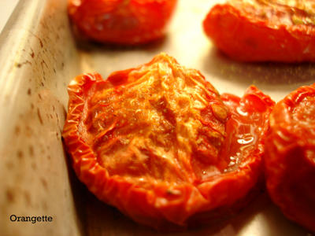

Better living through slow-roasting
The word “happiness” has many definitions, but I’m quite convinced that if you looked it up in one of those nifty visual dictionaries, what you’d see is a pan of slow-roasted tomatoes. I only exaggerate slightly.

I first tasted these one summer in Oklahoma, when a glut of tomatoes from my parents’ garden sent us running for the cookbook shelf. Searching every index, poring over flashy photographs, and scanning recipes from aspic to ziti, we stumbled upon Molly O’Neill’s A Well-Seasoned Appetite, a sturdy, sensuous book that’s a bit heavy on the prose, a bit thin on the photos, but just right when it comes to tomatoes. For ours, still sun-warm and very sweet, we wanted something simple—no terrines or towers. So, loosely following O’Neill’s guidance, we sent sheet pans full of halved tomatoes into a low oven, and six hours later, we retrieved them to find their edges crinkled like thick fabric and their juices concentrated and syrupy. They were fleshy, with veins that rose to the surface under the heat, and when we bit into them, they shot thick vermilion juice onto the tabletop.

They may take six hours to reach fruition, but straight from the oven, a slow-roasted tomato is instant gratification. It’s almost impossible to keep stray fingers out of them; they’re like rubies in fruit form. And though they are delicious plain, their sweet acidity also plays remarkably well with other flavors, especially those dishes at the rich, robust end of the spectrum: a creamy cheese soufflé, maybe, or a plate of trofie al pesto. Paired with fresh chèvre, peppery arugula, and pesto, they make for a luscious, drippy sandwich, and fanned over the top of a burger, they’re ketchup for the adult set. Even the tried-and-tired Caprese salad becomes an entirely new thing with slow-roasted tomatoes in place of raw. Brandon has his sights set on trying them in a pizza sauce, but in the meantime, I love to slice a handful of them into a bowl with slivered basil, capers, sea salt, and splashes of balsamic and olive oil: an improvised sauce for whatever pasta happens to land in the boiling pot. And on nights when the stove is too much to consider, few things make for a happier picnic—on the floor or in the grass—than a hunk of crusty bread, a fat wedge of bleu d’Auvergne, and slow-roasted tomatoes.
{kind=link}
With a little foresight, you can arrange to have them always in your fridge, ready and waiting. I’ve never been one to believe, anyway, that happiness can’t be planned.
Slow-Roasted Tomatoes with Sea Salt and Ground Coriander
I’ve played enough with O’Neill’s formula that I think it’s now safe to claim it as my own—and anyway, it’s loose enough to hardly be called a recipe at all. I’ve tried sprinkling various herbs and spices onto the tomatoes; I’ve baked them for four hours sometimes and six hours others*; I’ve roasted 10 one day and 28 the next. I’ve even carried my experimentation into winter—seasonal blasphemy, I know—and with almost summery results. Unlike their more delicate cousins, decent Roma tomatoes can be found almost year-round, and after a few hours in the oven, they make a fine rebuttal to a cold January night. In fact, for this preparation, I now choose almost exclusively Romas, even in the summertime. Dusted with a little salt and ground coriander—the (now not-so-)secret weapon that makes this recipe a keeper—they take on a full, almost winey flavor, and they hold their shape beautifully. Don’t hesitate to roast a lot at a time; they keep well in the fridge, sealed up tight, for several days.
Ripe tomatoes, preferably Roma
Olive oil
Sea salt
Ground coriander
Preheat the oven to 200 degrees Fahrenheit.
Wash the tomatoes, cut off the stem end, and halve them lengthwise. Pour a bit of olive oil into a small bowl, dip a pastry brush into it, and brush the tomato halves lightly with oil. Place them, skin side down, on a large baking sheet. Sprinkle them with sea salt and ground coriander—about a pinch of each for every four to six tomato halves.
Bake the tomatoes until they shrink to about 1/3 of their original size but are still soft and juicy, 4 to 6 hours. [I usually let mine go for the maximum time.] Remove the baking sheet from the oven, and allow the tomatoes to cool to room temperature. Place them in an airtight container, and store them in the refrigerator.
*If the thought of leaving the oven on for 4-6 hours in the summertime makes you overheat on the spot, consider starting a batch first thing in the morning. By the time the day’s heat kicks into full throttle, they’ll be finished, and so will your oven.